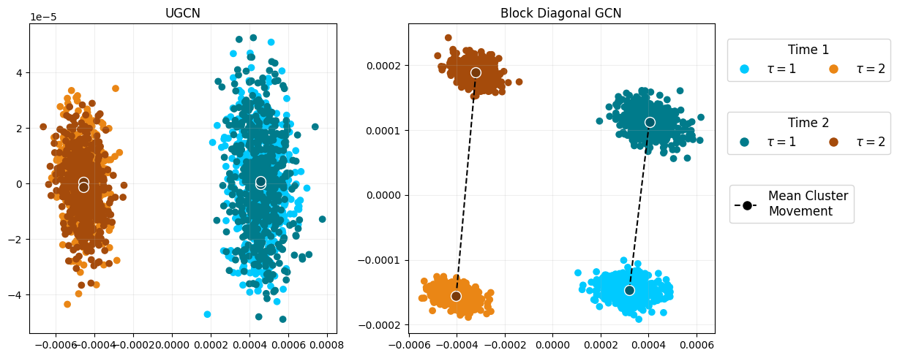
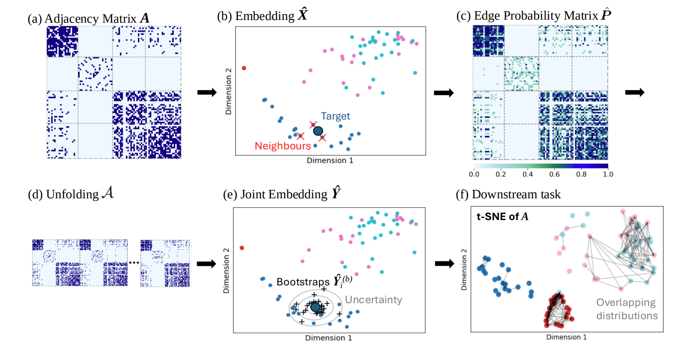

Contact & Links
- Email: edwarddavis[at]hotmail.co.uk, edward.davis[at]bristol.ac.uk
- GitHub: edwarddavis1
- LinkedIn: edwarddavis941
- Google Scholar: Ed Davis
- PhD supervised by Prof. Patrick Rubin-Delanchy and Dr Daniel Lawson
PhD Research Outline
My PhD thesis addresses the problem of how to understand information encoded in multi-layer graphs. Here, a graph could refer to a network or a corpus of text, and multi-layer could refer to a graph that is dynamic or observed in different contexts. We address this problem through the use of graph embedding, a process by which we assign each node (or edge, or the whole graph) to a vector. This creates a space in which nodes with similar behaviour are closer to each other. We invented a new way of embedding dynamic graphs by using a framework that extended the applicability of any established graph embedding method to multi-layer graphs.
We provide a statistical guarantee that our framework produces multi-layer embeddings that are stable over space and time (the first general proof of its kind), and we show through rigorous simulated and real-data experiments that our framework is more powerful and interpretable than other state-of-the-art methods. We have also shown that this framework demonstrates empirical gains when applied to Graph Neural Networks.
Our proof of stability can be rephrased as a proof of exchangeability, that is, our embedding framework can take a multi-layer graph and turn it into an exchangeable sequence of vectors. With exchangeability, we gain access to other fields of maths, including conformal prediction and the bootstrap.
What is a graph embedding?
See the graphic below for a visual explanation of a graph embedding. On the left, we see a Harry Potter emnity network (adversarial interactions) plotted in the conventional way. On the right, we see a corresponding graph embedding where each node is represented in a 2D space (hover over each node to see the correspondence). In this case, the graph embedding is able to separate the good and the bad characters in the Harry Potter world.
My work mainly focuses on how to best compute a dynamic graph embedding. In the below example, a network is changing its connections over time. In the corresponding dynamic embedding, we are able to see how this structure changes over time - click "Play" to see a dynamic graph embedding in action! To find out more about this interesting field, see this blog post, or some of my papers.
Research Papers
Valid Conformal Prediction for Dynamic GNNs (ICLR 2025)
Graph neural networks (GNNs) are powerful black-box models which have shown impressive empirical performance. However, without any form of uncertainty quantification, it can be difficult to trust such models in high-risk scenarios. Conformal prediction aims to address this problem, however, an assumption of exchangeability is required for its validity which has limited its applicability to static graphs and transductive regimes.
We propose to use unfolding, which allows any existing static GNN to output a dynamic graph embedding with exchangeability properties. Using this, we extend the validity of conformal prediction to dynamic GNNs in both transductive and semi-inductive regimes. We provide a theoretical guarantee of valid conformal prediction in these cases and demonstrate the empirical validity, as well as the performance gains, of unfolded GNNs against standard GNN architectures on both simulated and real datasets.
A Simple and Powerful Framework for Stable Dynamic Network Embedding (Corrections, JMLR 2024)
In this paper, we address the problem of dynamic network embedding, that is, representing the nodes of a dynamic network as evolving vectors within a low-dimensional space. While the field of single-graph embedding is wide and established, the field of dynamic graph embedding is comparatively in its infancy. In this paper, we propose that we can take a wide class of established single-graph embedding methods and use them to produce interpretable and powerful dynamic graph embeddings by simply applying them to the dilated unfolded matrix. We provide a theoretical guarantee that, regardless of embedding dimension, these unfolded methods will produce stable embeddings over time and space, meaning that nodes with identical latent behaviour will be exchangeable, regardless of their position in time or space.

Valid Bootstraps for Networks with Applications to Network Visualisation (UAI 2025)
Quantifying uncertainty in networks is an important step in modelling relationships and interactions between entities. We consider the challenge of bootstrapping an inhomogeneous random graph when only a single observation of the network is made and the underlying data generating function is unknown. We utilise an exchangeable network test that can empirically validate bootstrap samples generated by any method, by testing if the observed and bootstrapped networks are statistically distinguishable. We find that existing methods fail this test. To address this, we propose a principled, novel, distribution-free network bootstrap using k-nearest neighbour smoothing, that can regularly pass this exchangeable network test in both synthetic and real-data scenarios. We demonstrate the utility of this work in combination with the popular data visualisation method t-SNE, where uncertainty estimates from bootstrapping are used to explain whether visible structures represent real statistically sound structures.
Projects
A PyTorch implementation of the unfolded graph neural network (UGNN), a powerful and interpretable model for multi-network prediction.
The model has a theoretical guarantee of valid conformal prediction when predicting into the future on many datasets. Conformal prediction allows for a range of predictions to be output from a single model for the purpose of uncertainty quantification, no matter if the model is a black-box or not. Below is an example of conformal node prediction, which is valid under a UGNN.
# UGNN model output
output = best_model(unf_network.x, unf_network.edge_index, unf_network.edge_weight)
# Apply conformal prediction (for uncertainty quantification)
all_pred_sets = get_prediction_sets(
output, unf_network, calib_mask, test_mask, score_function="APS", alpha=0.1
)# Look at the prediction sets for 10 random nodes
for calib_node_idx in np.random.randint(len(all_pred_sets), size=10):
node_pred_set = all_pred_sets[calib_node_idx]
node_idx = np.where(calib_mask == 1)[0][calib_node_idx]
possible_labels_for_node = [
str(all_labels[pred]) for pred in np.where(node_pred_set == 1)[0]
]
print(
f"Node {node_idx} (True label {str(all_labels[unf_network.y[node_idx]])}): {possible_labels_for_node}"
)Node 4352 (True label Teachers): ['1A', '1B', '2A', '2B', '3A']
Node 3657 (True label 1B): ['1A']
Node 4162 (True label 2A): ['1B', '2A', '2B']
Node 3492 (True label 3A): ['1A', '1B', '2A', '3A', '3B']
Node 3675 (True label 1B): ['1A', '1B', '2A']
Node 3095 (True label 5A): ['4A', '4B', '5B']
Node 3097 (True label 5A): ['4A', '5A']
Node 3704 (True label 2B): ['1A', '2A', '2B', '3A']
Node 2941 (True label 1B): ['1A', '1B', '4A']
Node 3704 (True label 2B): ['1A', '2A', '2B', '3A']A Python package for exploring complex datasets including high-dimensional data, relational databases and networks.
For example, the below code can quickly compute a URLSE dynamic embedding and then produce an interactive plot of the embedding over time.
import pyemb as eb
# Embed the graph using unfolded regularised Laplacian spectral embedding
d = 10
URLSE_emb = eb.dyn_embed(As, d=d, method="URLSE")
# Quick interactive + animated plot of the embedding
fig = eb.quick_plot(URLSE_emb, n, T, node_labels)Example Interactive Visualisation:
Award-Winning Data Visualisation
Runner-up in the Jean Golding Institute's Beauty of Data competition. This visualisation was presented at the Bristol Data and AI Showcase 2022.
This visualisation displays an embedding of a friendship network between countries on the world stage based on their alliances.

(Click image for full-size)